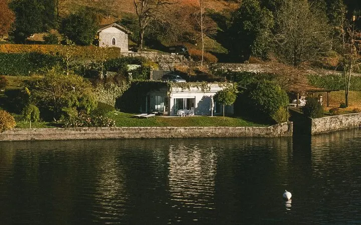
🦊 Ihre Basis
Villa Volpe
Ihr Design-Zuhause am sonnigen Ufer des Ortasees, drei Meter vom Wasser entfernt in Orta San Giulio — die perfekte Basis für alles auf dieser Karte.
Verfügbarkeit prüfenUnser See, Karte für Karte.
Schublade öffnenKarten verschieben und eine antippen, um sie umzudrehen.Durch die Karten wischen und eine antippen, um sie umzudrehen.
Tippen Sie auf einen Marker oder eine Kachel für Details. Villa Volpe ist der schwarze Marker. Den Überblick gibt unser Ortasee-Reiseführer.

Ihr Design-Zuhause am sonnigen Ufer des Ortasees, drei Meter vom Wasser entfernt in Orta San Giulio — die perfekte Basis für alles auf dieser Karte.
Verfügbarkeit prüfen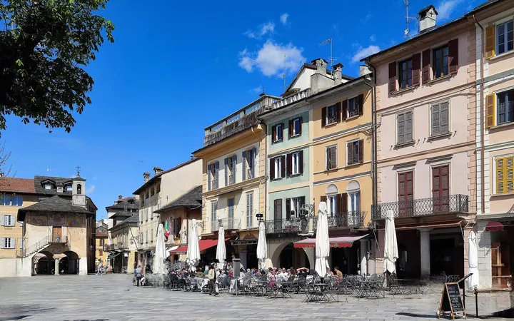
Das autofreie mittelalterliche Herz des Sees: Kopfsteinpflastergassen, freskengeschmückte Häuser und die Piazza Motta, die sich direkt zum Wasser öffnet.
Zum Reiseführer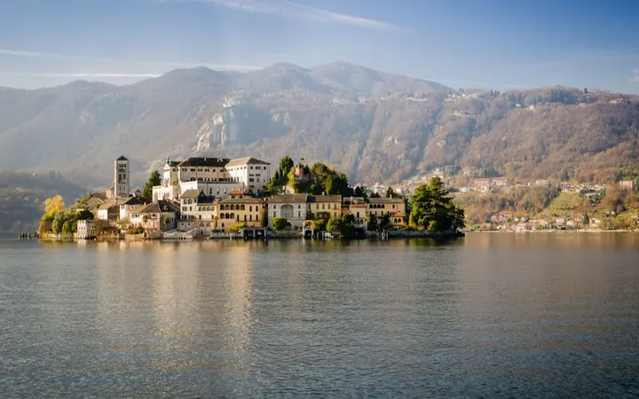
Eine winzige Insel, gekrönt von einer romanischen Basilika und einem stillen Kloster, nur zwei Bootsminuten vom Anleger in Orta entfernt.
Die Legende von San Giulio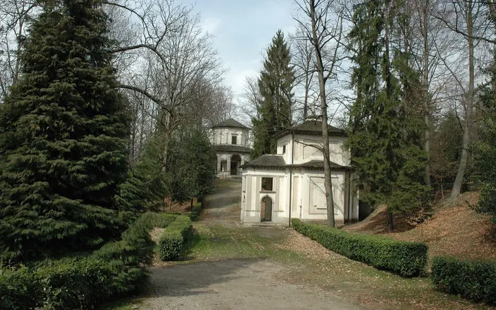
Ein UNESCO-Welterbe-Hügel über dem Dorf mit zwanzig freskengeschmückten Kapellen, die dem heiligen Franziskus gewidmet sind, und weiten Blicken über den See.
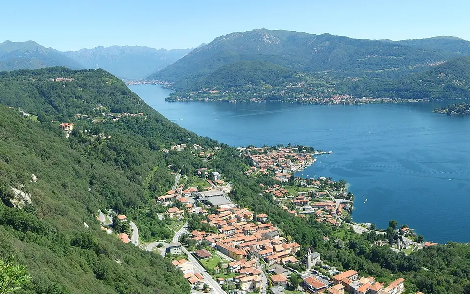
Eine barocke Wallfahrtskirche auf einem Granitfelsen, mit dem wohl schönsten Panorama über den gesamten Ortasee.
Im hügeligen Gignese das weltweit einzige Museum für Regen- und Sonnenschirme — kurios, charmant und regensicher.
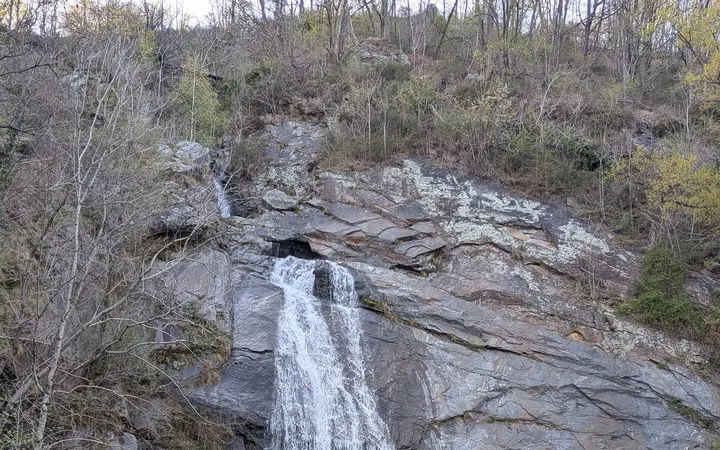
Ein versteckter Wasserfall mit einem eiskalten natürlichen Badebecken bei Boleto — eine erfrischende Belohnung nach einer kurzen Waldwanderung.
Guide zum EisbadenKaskaden und grüne Gumpen entlang des Pescone-Bachs bei Ameno — ein herrlicher Ort zum Abkühlen an heißen Tagen.
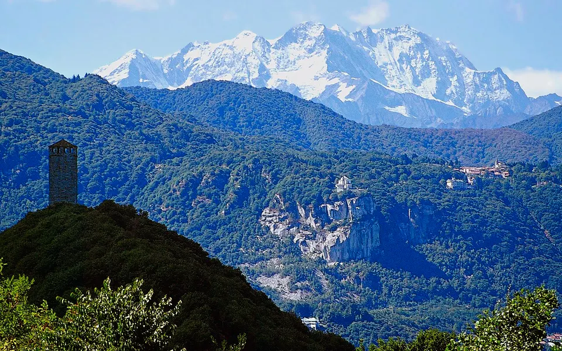
Ein 23 Meter hoher mittelalterlicher Wachturm auf einem bewaldeten Hügel, über einen kurzen Spaziergang erreichbar und mit weitem Blick über den südlichen See belohnt.
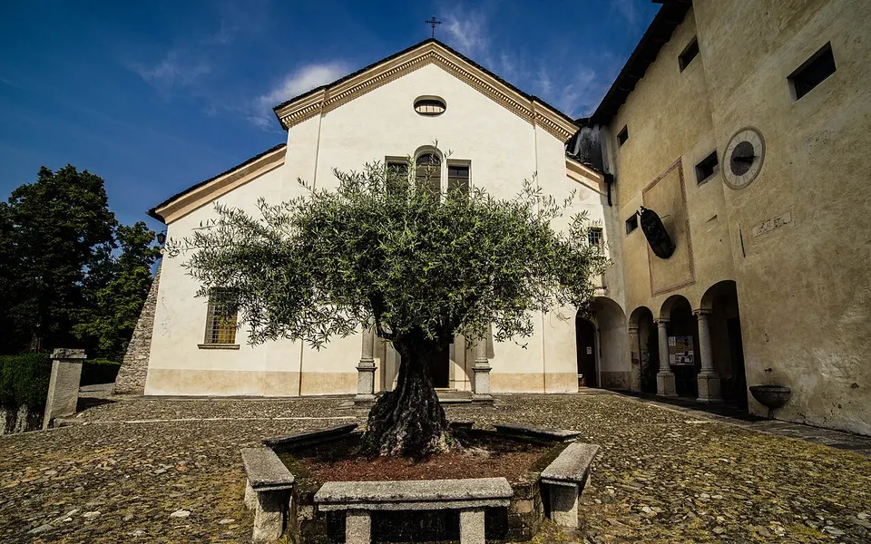
Ein Franziskanerkloster aus dem 15. Jahrhundert krönt einen stillen, kastanienbewachsenen Hügel — ein leichter Spaziergang zu Ruhe und Panorama.
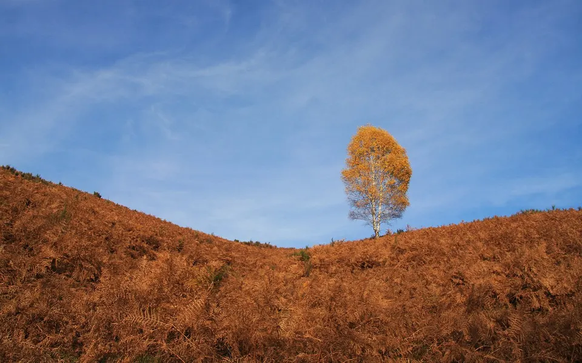
Eine leichte Kammwanderung über dem Ostufer mit einer Reihe von Aussichtspunkten über See und Alpen.
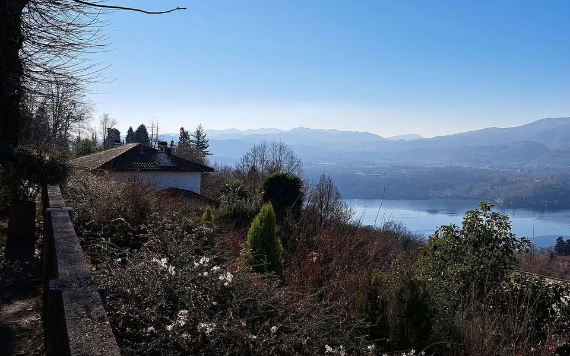
Ein Rundweg durch die WWF-Oase, Wälder und stimmungsvolle verlassene Weiler in den Hügeln von Ameno.
Eine winzige Kapelle auf einem Hügel und einer der schönsten, ruhigsten Sonnenuntergangs-Aussichtspunkte über dem See.
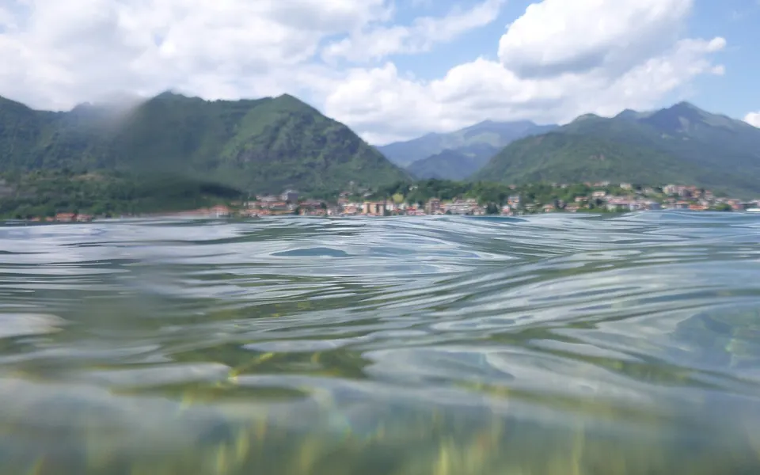
Leihen Sie ein Kajak, Kanu oder Stand-up-Paddleboard an der Uferpromenade von Orta und paddeln Sie aus eigener Kraft zur Insel.
Outdoor-Aktivitäten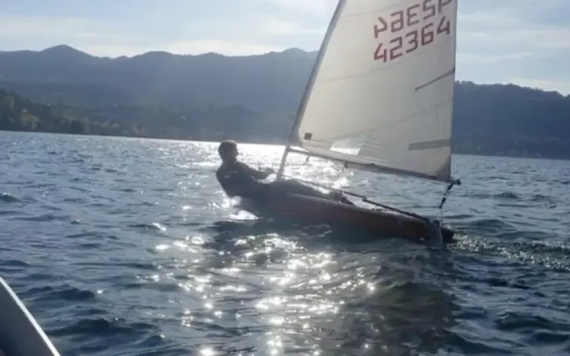
Lernen Sie segeln oder gehen Sie mit Skipper auf einen Törn über die ruhigen, geschützten Gewässer des Sees.
Segeln mit Dodo Gorla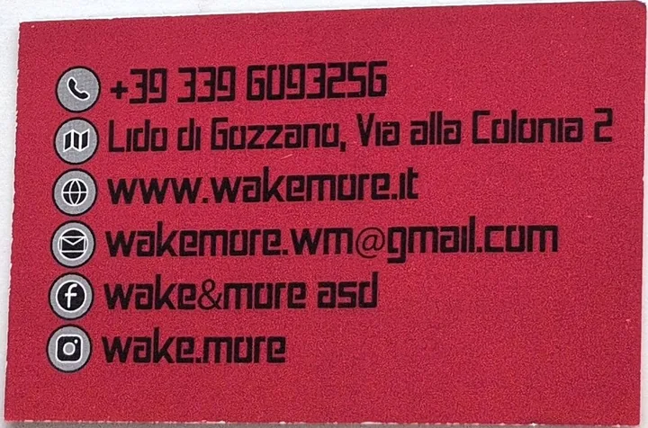
Wake&More bietet Wakeboard- und Wakesurf-Sessions für alle Niveaus im ruhigeren südlichen Teil des Sees.
Wakeboard-Guide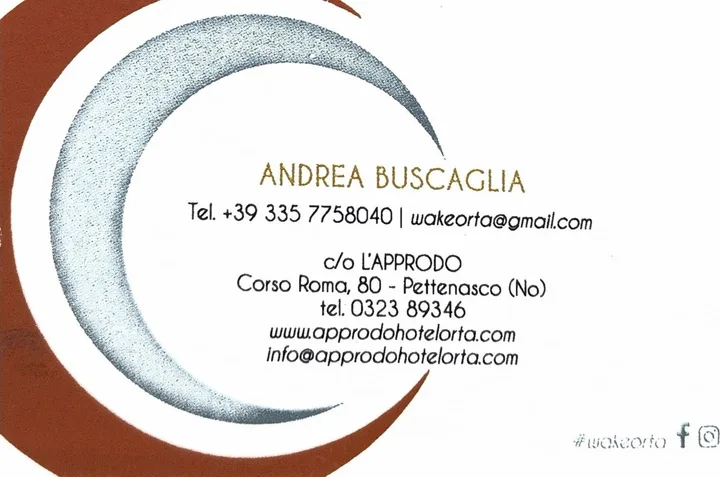
Wakesurf- und Wakeboardschule am Hotel L'Approdo in Pettenasco, fünf Autominuten; im Sommer auch Bootsausflüge für Gruppen.
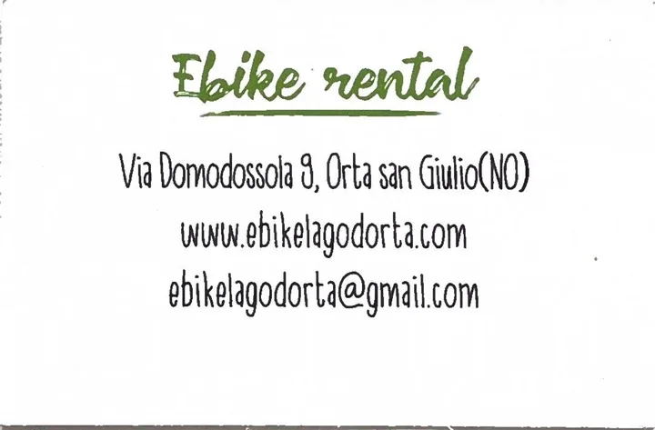
Leihen Sie ein E-Bike und lassen Sie den Motor die Anstiege einebnen, während Sie den See umrunden oder zu einem Aussichtspunkt hinauffahren.
Outdoor-AktivitätenKletterparcours in den Baumwipfeln und Ziplines in den Wäldern über dem See — ein toller halber Tag für Familien und Nervenkitzel-Sucher.
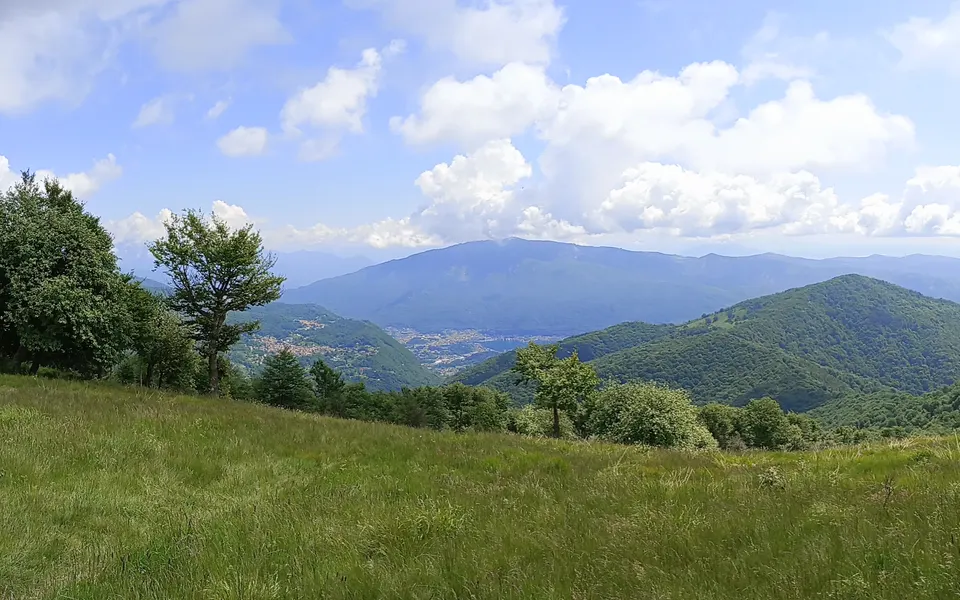
Der 1.491 m hohe Gipfel zwischen Orta und Maggiore, mit Alpen-Achterbahn, Abenteuerpark und 360°-Blick auf sieben Seen.
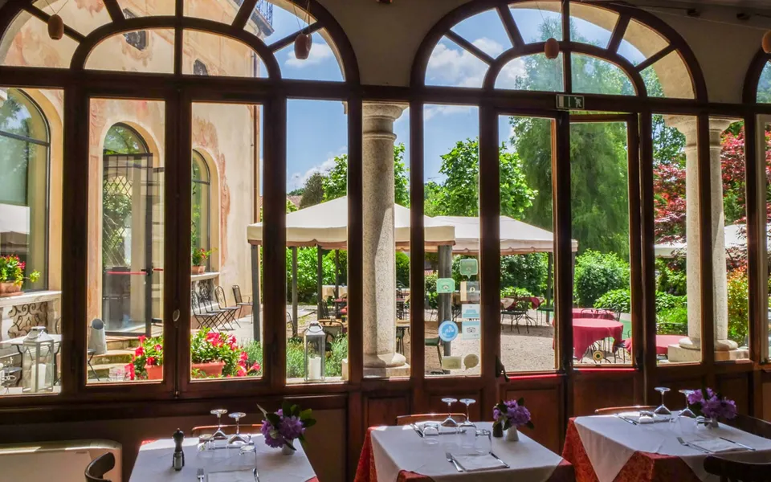
Unser Lieblingsrestaurant in der Villa Nigra aus dem 16. Jahrhundert oben in Miasino: regionale Küche in der Limonaia mit ihren hohen Bogenfenstern zum Garten. Sagen Sie Lilli, dass Sie in der Villa Volpe wohnen. Mittwochs geschlossen.
Foto: Villa Nigra
Unser nächster Nachbar: neun Minuten zu Fuß am Ufer entlang, kreative Küche auf einer Terrasse direkt am Wasser.
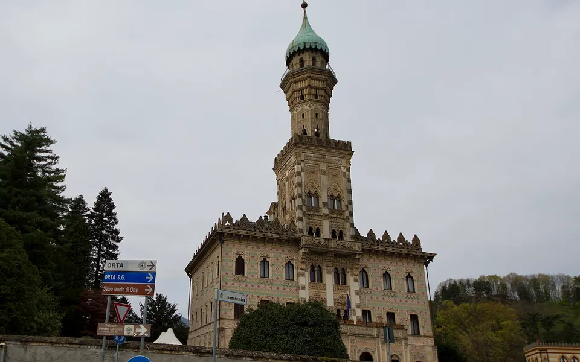
Antonino Cannavacciuolos Drei-Sterne-Restaurant in einer märchenhaften maurischen Villa — das gastronomische Aushängeschild des Sees.
Das Villa-Crespi-ErlebnisEine historische Sterneküche im nahen Soriso, eine ruhige 15-minütige Fahrt vom See entfernt.
Cannavacciuolos entspanntes Seerestaurant und Resort in Pettenasco, direkt am Wasser.
Ein Agriturismo am Hang mit eigenem Weinberg, saisonaler Küche und einem unvergesslichen Blick auf den See.
Ein freundliches Hotelrestaurant im Zentrum von Orta San Giulio, praktisch für ein Mittagessen zwischen den Sehenswürdigkeiten.
Seefisch und eine Terrasse am Wasser beim Anleger in Pella, am sonnigeren Westufer.
Ein Panoramarestaurant in den Hügeln über dem See, allein wegen der Aussicht die Fahrt wert.
Handwerkliches Eis am Westufer in Pella — der perfekte Vorwand für einen Spaziergang am See.
Eine Konditorei und ein Café im Viertel für ein echtes italienisches Frühstück, nur einen kurzen Spaziergang von der Villa entfernt.
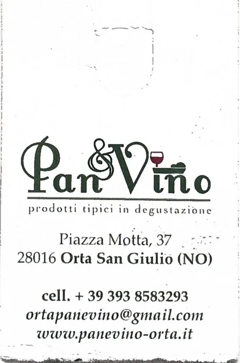
Weine, Käse und Wurst zum Probieren an den Tischen auf der Piazza Motta, dazu regionale Produkte zum Mitnehmen.
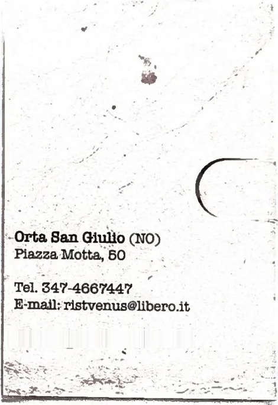
An der Piazza Motta, mit Speisesälen im ersten Stock mit Blick auf den See und die Insel San Giulio; piemontesische Küche.
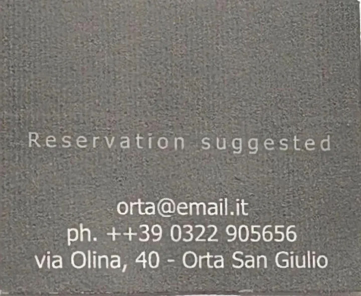
Das Restaurant des Piccolo Hotel Olina, in der Altstadt gleich bei der Piazza Motta. Besser reservieren.
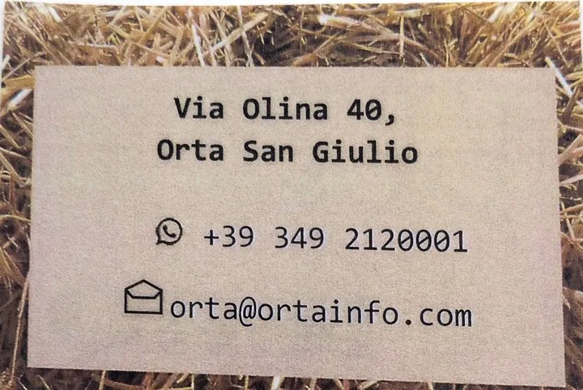
Traditionelle Küche vom Ortasee mit hausgemachter Pasta und vegetarischen Gerichten, eine Gasse hinter dem Platz. Dienstags geschlossen.
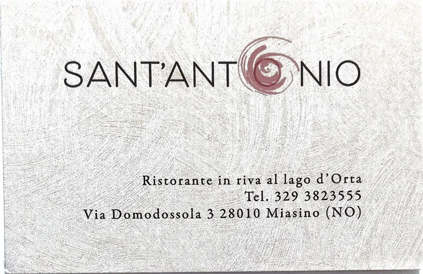
Am Ufer zwischen Orta und Pettenasco, drei Autominuten von der Villa: moderne Küche mit asiatischen Akzenten. Dienstags geschlossen.
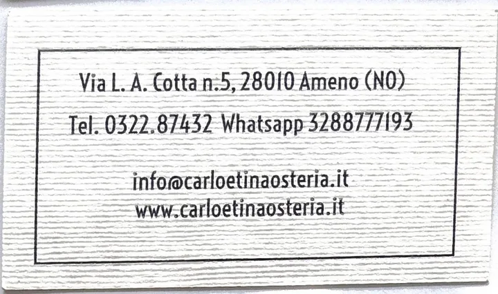
In Ameno, zehn Autominuten in den Hügeln: saisonale Küche zwischen Piemont und Toskana.
Der praktischste Supermarkt für die Villa, wenige Minuten nördlich am See.
Ein lokaler Lebensmittelladen für den täglichen Bedarf in den Hügeln östlich des Sees.
Ein preisgünstiger Supermarkt eine kurze Fahrt südlich Richtung Gozzano.
Ein größerer Supermarkt für den Großeinkauf am südlichen Ende des Sees.
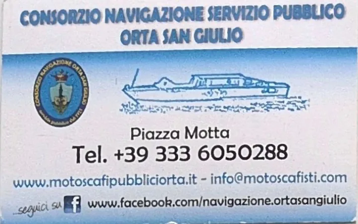
Die öffentlichen Motorboote von der Piazza Motta zur Insel San Giulio fahren das ganze Jahr.
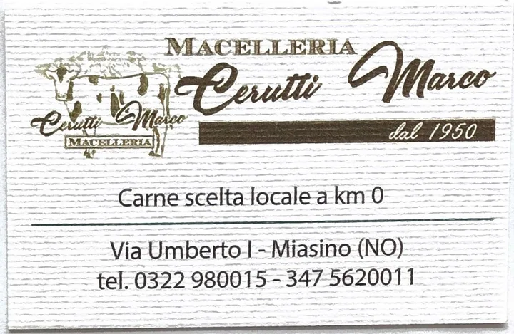
Dorfmetzgerei in Miasino seit 1950, mit Fleisch aus der Gegend fürs Abendessen in der Villa.
Taxi und Mietwagen mit Fahrer ab Orta, für Flughafentransfers und Fahrten rund um den See. Englischsprachig.
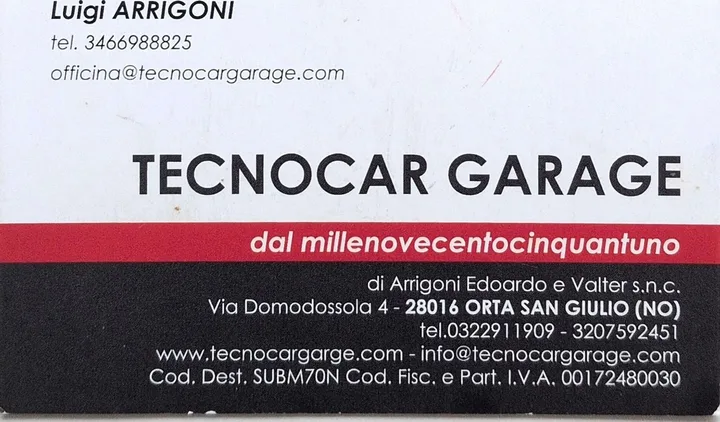
Autowerkstatt am Ortseingang von Orta seit 1951, für Pannen und Service.
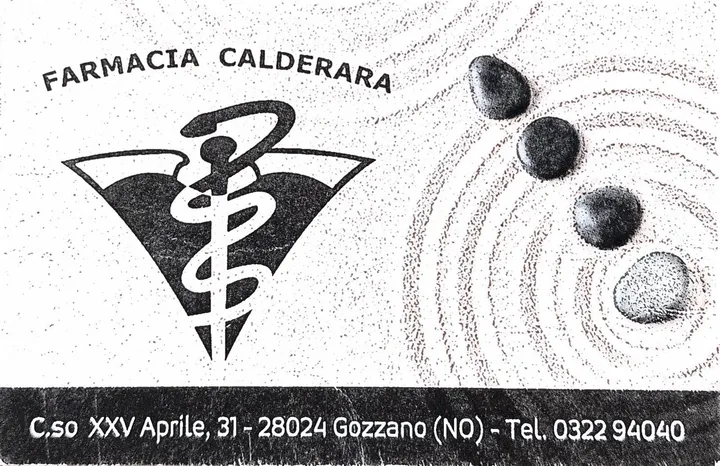
Apotheke im Zentrum von Gozzano am Südende des Sees, zehn Autominuten.
Der Ortasee ist die stille, romantische kleine Schwester der großen italienischen Seen: ein UNESCO-Sacro Monte, ein autofreies mittelalterliches Dorf, ein Kloster auf einer Insel und grüne Hügel voller Wege und Wasserfälle. Alles auf dieser Seite liegt nur eine kurze Fahrt von der Villa Volpe entfernt.
Mehr erfahrenWir schreiben ausführlich über Badestellen, die Legenden der Insel, Reisen in der Nebensaison, hundefreundliche Ausflüge und barrierefreie Routen rund um den See.
Zum Villa-Volpe-Blog